Landing Page da LabsIf
Redesign completo da landing page da startup LabsIf, realizado durante estágio em UI/UX Design.
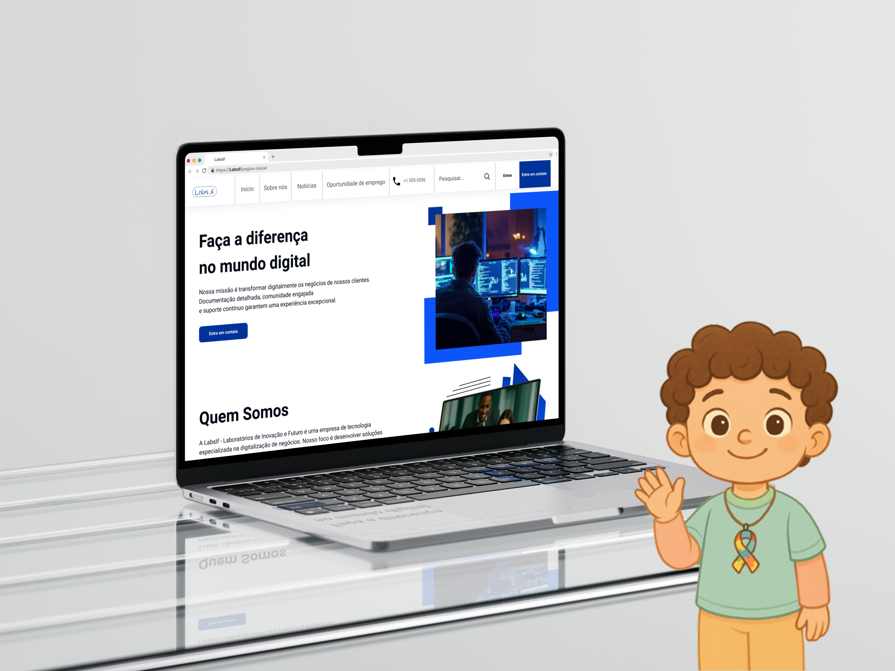
Sobre
Durante meu estágio na LabsIf, atuei como UI/UX Designer com o objetivo de redesenhar a landing page da empresa, que já existia mas precisava de melhorias em usabilidade, visual e funcionalidades. O processo seguiu práticas de design centrado no usuário e gestão de projetos:
- Levantamento de requisitos com o CEO/supervisor do estágio
- Análise do site antigo e benchmark de referências do mercado
- Mapeamento da jornada do usuário e fluxos de navegação
- Criação de wireframes de baixa e média fidelidade
- Desenvolvimento no Odoo, adaptando o design às limitações da plataforma
- Validações contínuas com o cliente em cada etapa
O resultado foi uma landing page moderna, intuitiva e alinhada à identidade visual da LabsIF, pronta para publicação.
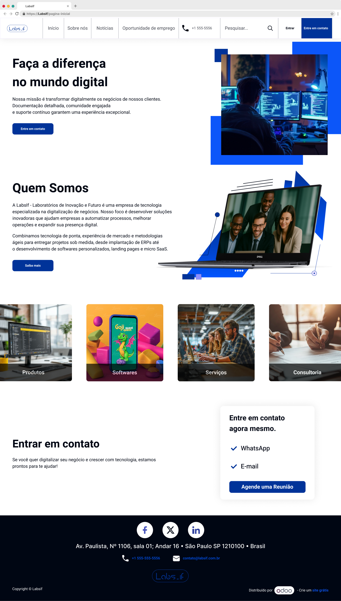
Desafio
- O site já existia, mas não atendia completamente às necessidades da empresa
- Necessidade de integrar novos requisitos do CEO sem comprometer a experiência do usuário
- Limitações técnicas da plataforma Odoo, que não suportava alguns elementos prototipados no Figma
- Adaptação do design de alta fidelidade para uma ferramenta low-code, mantendo a qualidade visual e a usabilidade
Solução
- Realizei entrevista e reuniões para entender as dores e objetivos do cliente
- Utilizei metodologias àgeis e ferramentas como ClickUp para gestão das atividades
- Criei protótipos interativos no Figma, validados a cada etapa com o CEO
- Estudei a plataforma Odoo e realizei cursos complementares, como Wix e Odoo, para dominar o low-code
- Adaptei os elementos visuais com criatividade, mantendo a consistência e a proposta original
- Documentei todas as mudanças e comuniquei ao cliente, assegurando transparência
Processo
1. Levantamento de requisitos
Entrevistas e reuniões para compreender as dores e objetivos do cliente.
2. Fluxo de usuários
Desenvolvimento do fluxo de usuários com base no site antigo e nos novos requisitos, criando assim uma experiência eficiente.
3. Wireframes
Criação dos wireframes de baixa e média fidelidade no Figma, validados com o CEO em cada etapa.
4. Protótipos de alta fidelidade e Low-code
Ao finalizar os protótipos e desenvolver no Odoo, foi necessário fazer mudanças nas interfaces, para se adaptar ao ambiente do Odoo.
Antes do redesign


Fluxos de usuário
Wireframes de baixa fidelidade
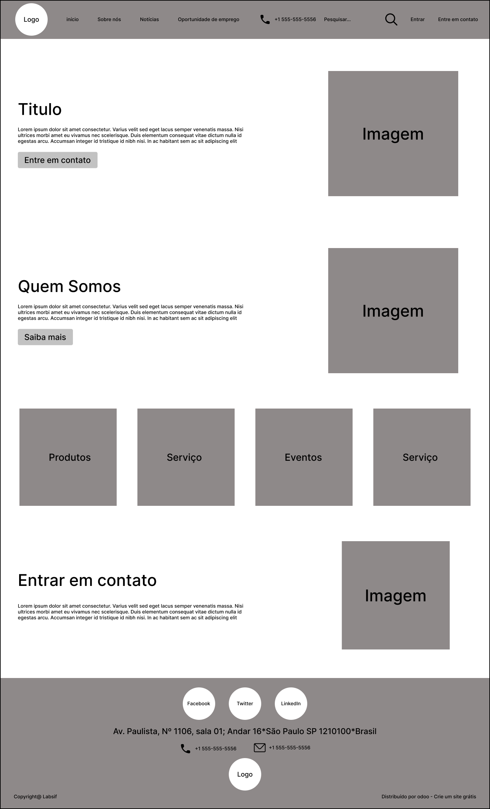
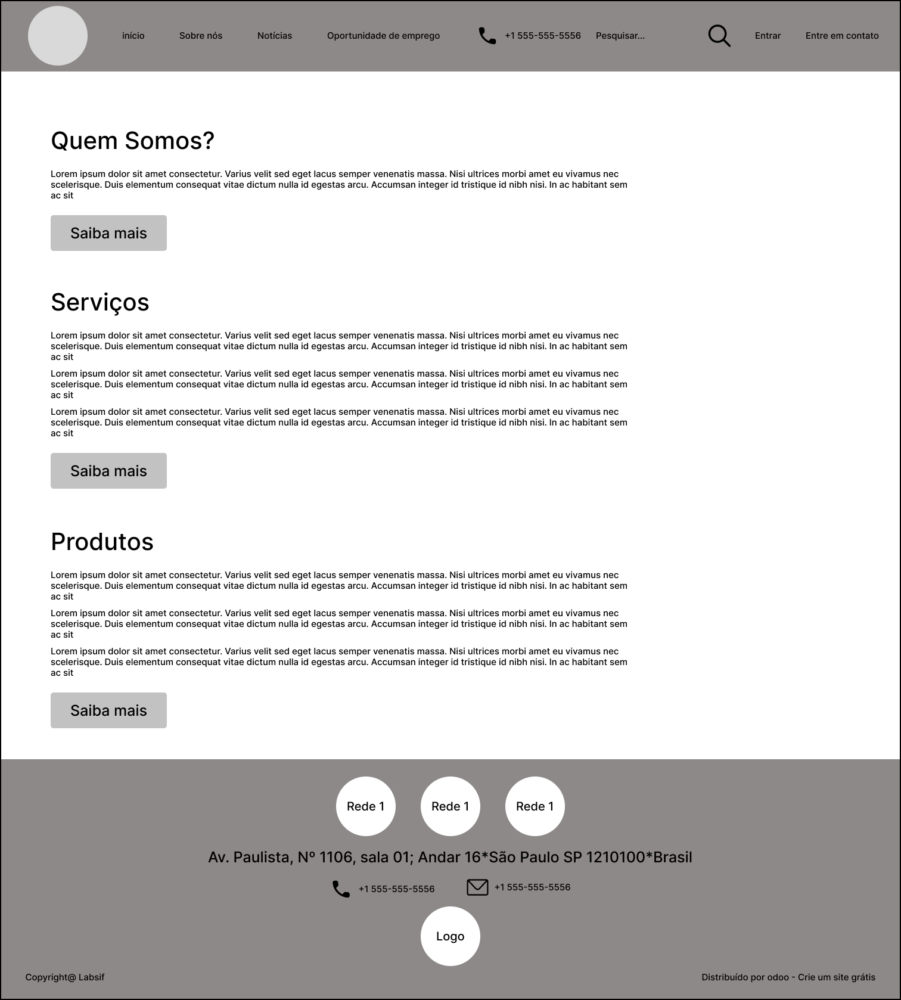
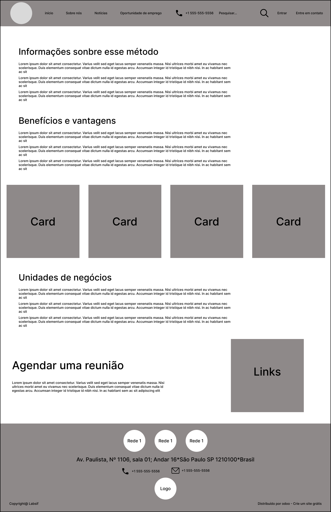
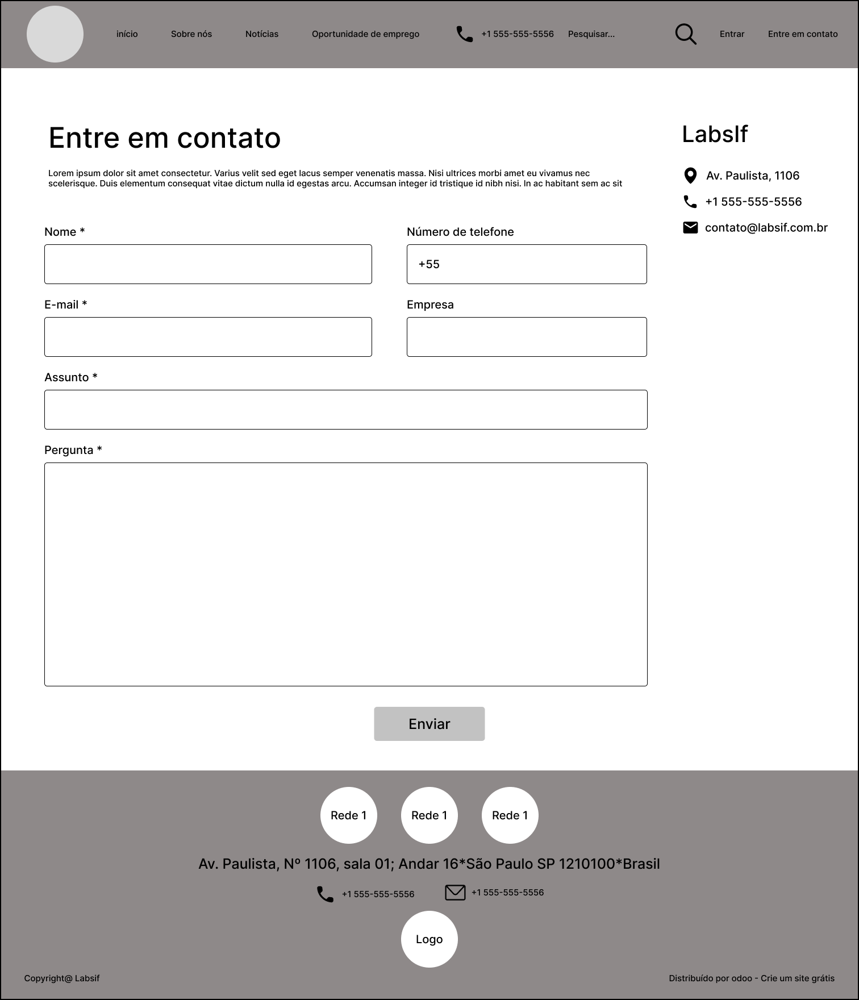
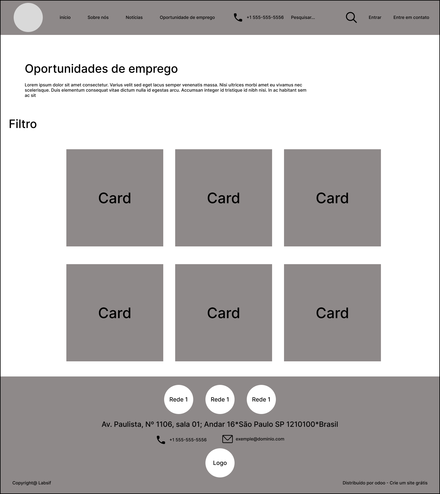
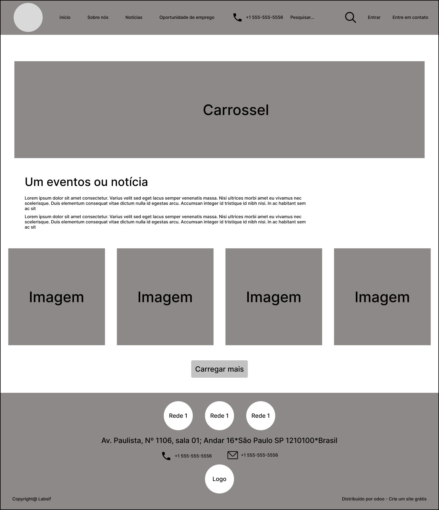
Protótipo de alta fidelidade
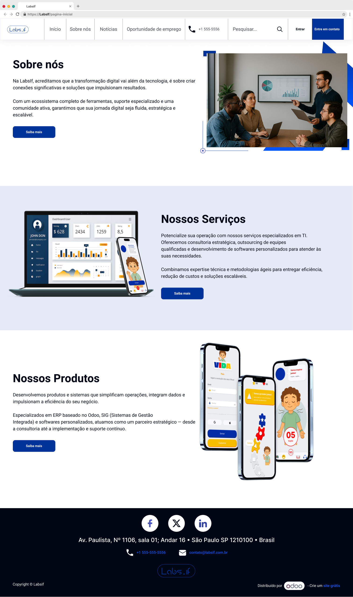
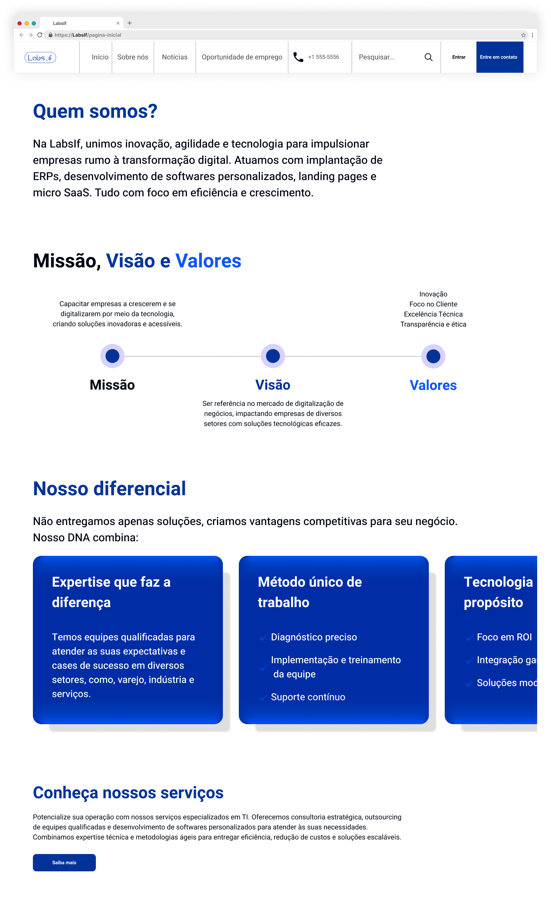
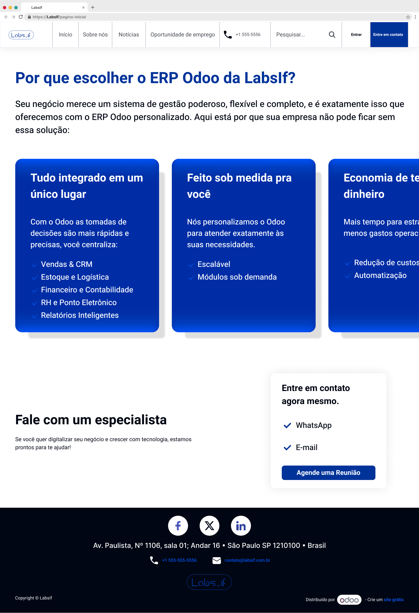
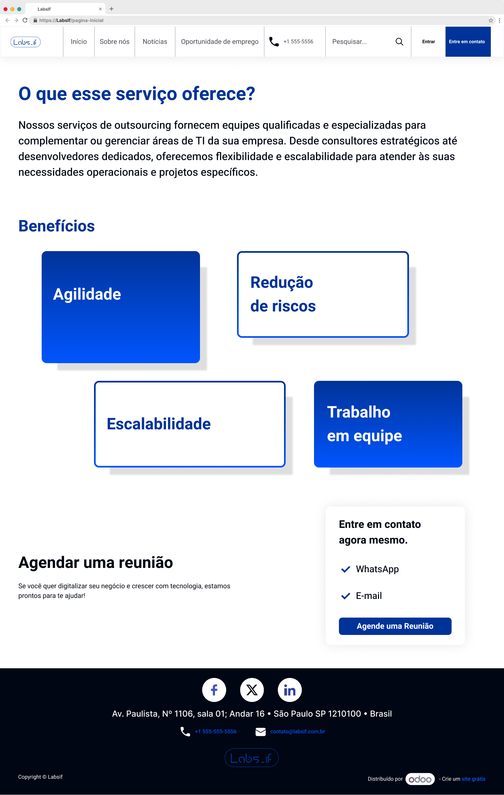
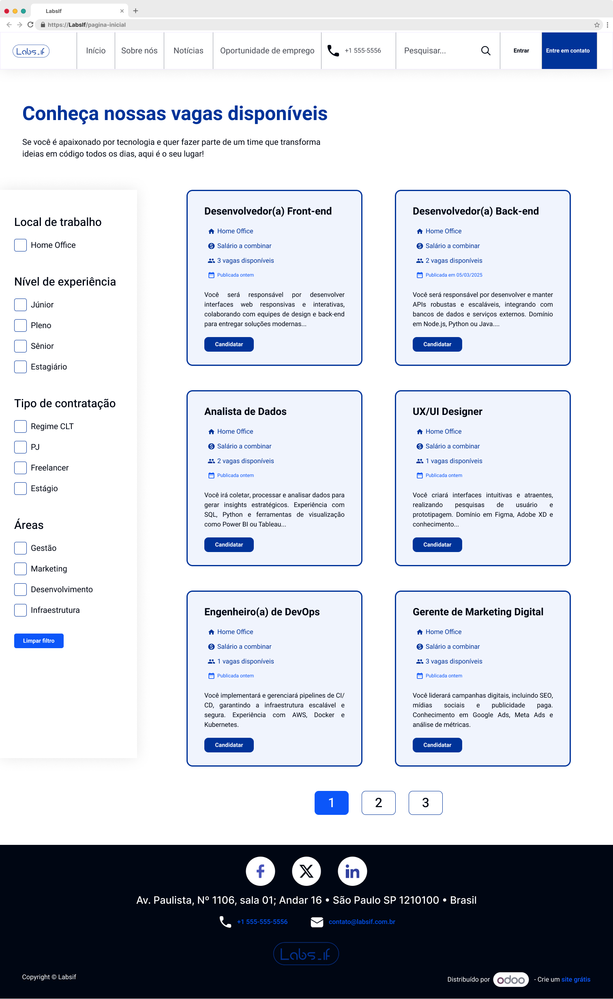
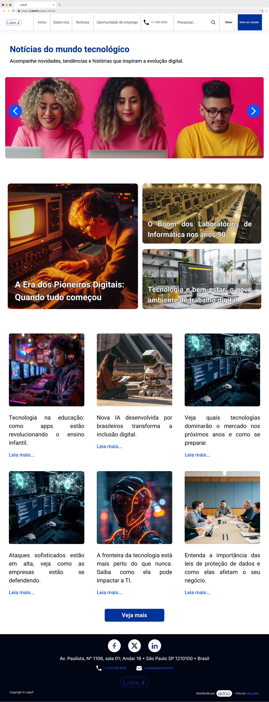
Protótipo adaptado


Telas finais no Odoo
Aprendizados
Mais para explorar

Recicla-ITA
Conectando cidadãos e catadores para otimizar a logística de resíduos recicláveis. Com interfaces intuitivas para os catadores e um dashboard administrativo completo para a Defensoria Pública e cooperativas.
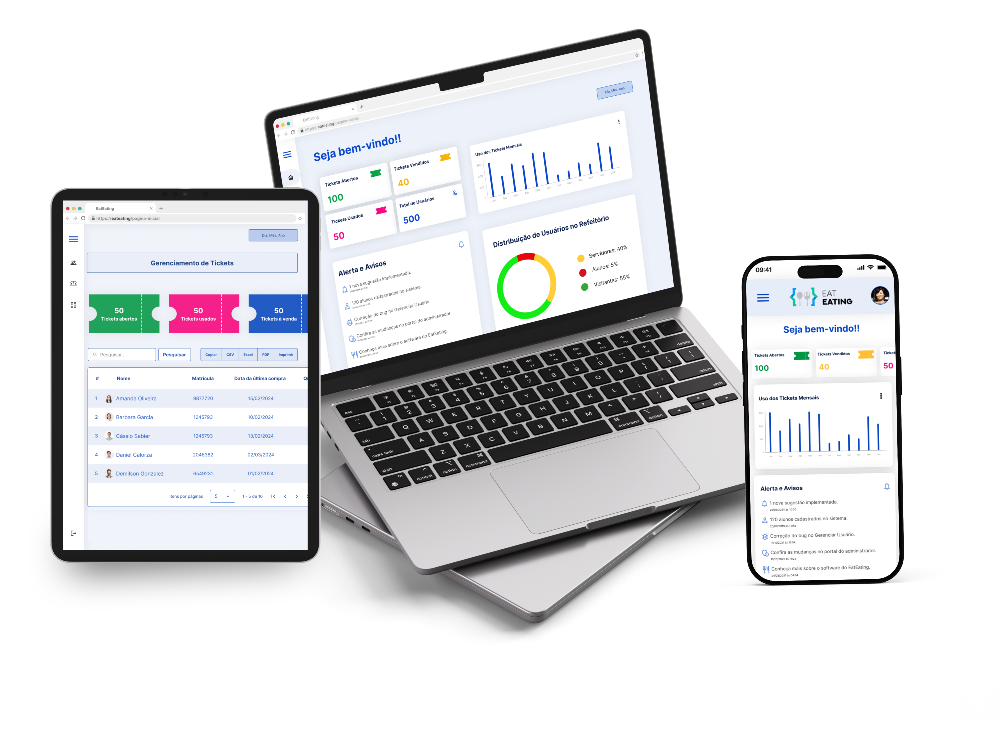
EatEating
Sistema para controle de acesso ao refeitório do Campus, por meio de login com biometria, RFID ou credenciais através de uma catraca física, permitindo a compra antecipada de tickets e consulta de cardápios.
Gostou deste projeto?
Vamos conversar sobre como posso ajudar no seu próximo projeto!
Entre em contato